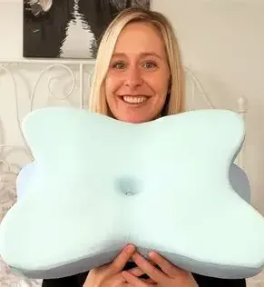
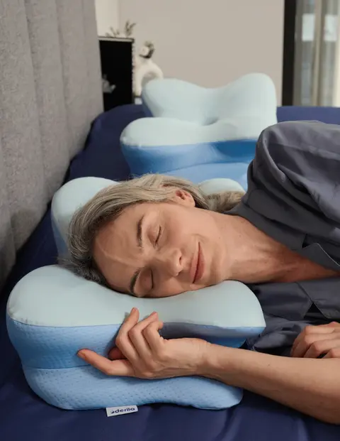
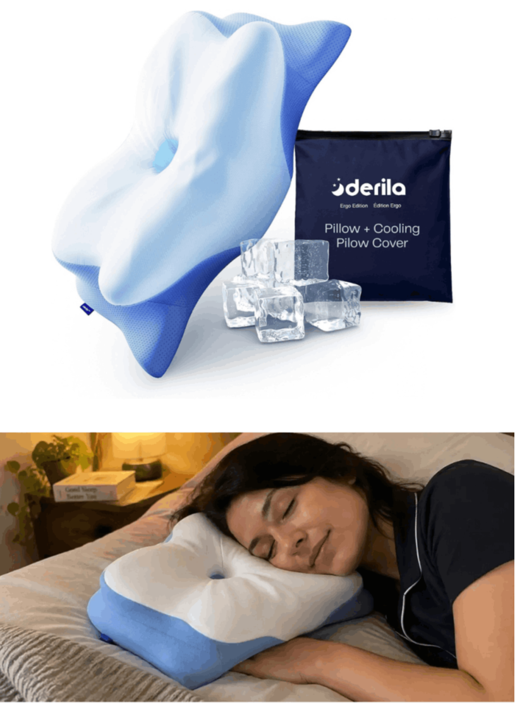
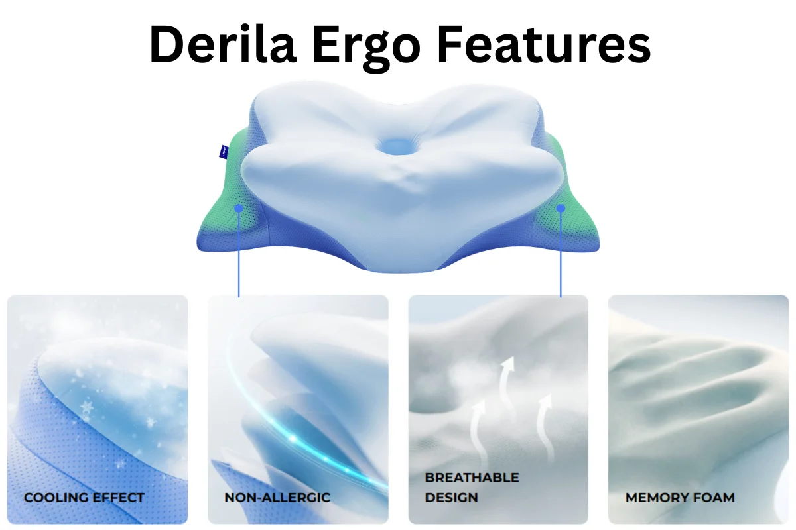
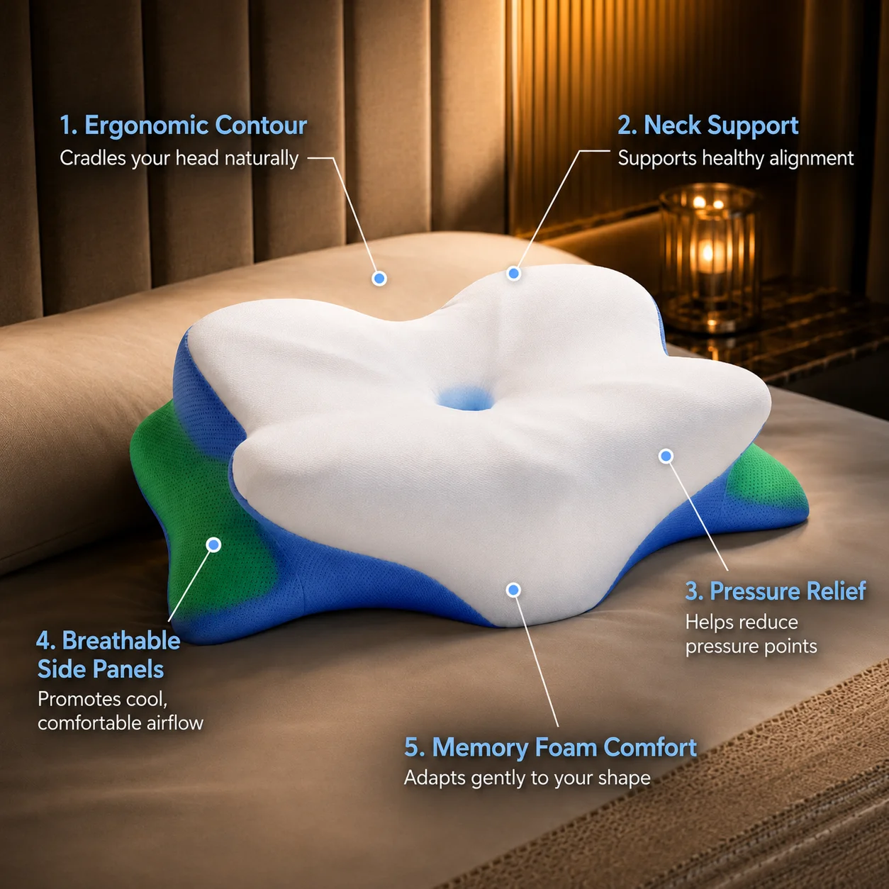
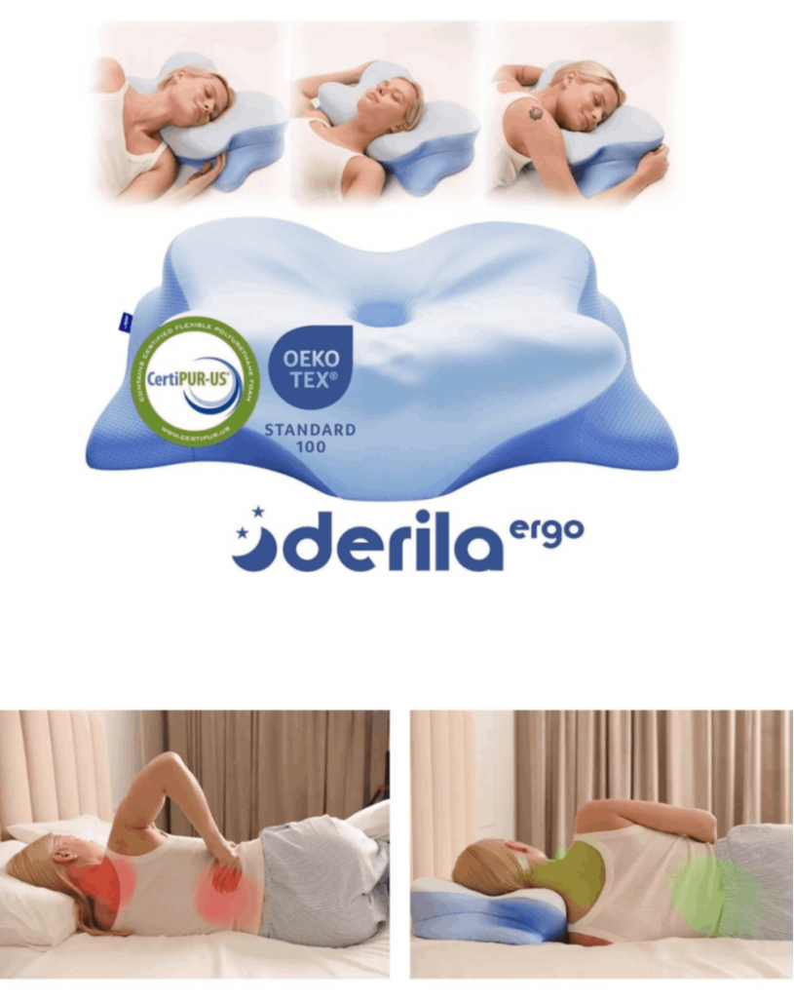

based on 276,894 reviews!
Derila Ergo Pillow is a premium ergonomic memory foam pillow designed to help you enjoy deeper, more comfortable sleep by supporting your head, neck, shoulders, and natural sleeping posture. Unlike ordinary pillows that can flatten, shift, or leave you waking up stiff, Derila uses a smart contoured design that gently adapts to your body and helps keep your neck and spine in a more relaxed position throughout the night. Whether you sleep on your back, side, or stomach, Derila Ergo Pillow offers a balance of softness and support so you can wake up feeling refreshed, rested, and ready for the day.
✤ Relieves neck, shoulder, and back pain
✤Maintains spinal alignment
✤Washable, hypoallergenic cover
✤Lightweight and travel-friendly
✤30-night risk-free trial
based on 276,894 reviews!

⭐⭐⭐⭐⭐ Verified Purchase
"My physiotherapist told me to get a cervical support pillow. I tried three before this one. The butterfly shape is the key — it's the only pillow that kept my spine neutral all night. Zero neck pain now."

⭐⭐⭐⭐⭐ Verified Purchase
"I'm a side sleeper with broad shoulders and nothing ever worked. The raised wing fills the gap between my shoulder and head perfectly — I've stopped waking up at 3AM. It's a night-and-day difference."

⭐⭐⭐⭐⭐ Verified Purchase
"I woke up with a stiff neck every single morning for four years. The very first night on the Derila Ergo felt different, and by the end of week one I honestly couldn't believe the change. I only wish I'd found it sooner."

The Derila Ergo Pillow is an orthopedic-style memory foam pillow featuring a distinctive "butterfly" shape rather than the standard rectangular design most people grew up sleeping on. Instead of a flat, uniform surface, the Derila Ergo Pillow has a contoured center dip flanked by two raised wings, a shape intended to cradle the head while supporting the neck's natural curve.
Here's what typically defines the Derila Ergo Pillow's construction:
High-density memory foam core – The Derila Ergo Pillow uses foam designed to slowly contour to the shape and weight of your head and neck, rather than the fast-rebound foam found in cheaper pillows.
Contoured butterfly design – The center cradle of the Derila Ergo Pillow is built for back sleepers, while the raised side wings are meant to support side sleepers who need extra height under the neck and shoulder.
Breathable, removable cover – Most versions of the Derila Ergo Pillow include a machine-washable, cooling-fabric cover designed to reduce heat buildup during the night.
Compact, travel-friendly size – The Derila Ergo Pillow is noticeably smaller than a standard bed pillow (roughly 20 inches wide), which makes it easy to pack for travel but also means it fits differently in a standard pillowcase than people expect.

The core idea is simple. Most pillows hold your head in a neutral — or worse, elevated — position that strains your cervical spine all night. Over eight hours, that strain adds up. You wake up stiff, sore, and unrested.
The Derila Ergo works differently. The contoured shape cradles your head slightly lower than the surrounding support zones. This keeps your cervical spine in natural alignment — the same position physical therapists aim for during treatment.
Here’s where it gets interesting. The butterfly design also creates space for your arms and hands to rest naturally. Many side sleepers experience arm numbness because they tuck their arms under a flat pillow. The Ergo’s shape removes that pressure point.
The cooling cover works on a separate mechanism. Your core body temperature needs to drop slightly to initiate deep sleep. A cover that dissipates heat rather than trapping it supports that natural process.
So does it work? For the right sleeper — back or side, with tension-related neck issues — the biomechanics are sound. This isn’t pseudoscience. Cervical contour pillows have a solid base of support in physical therapy research.




✔ Step 1:
Unbox and remove the pillow from its packaging.
✔ Step 2:
Place the pillow on your bed with the contoured side facing up.
✔ Step 3:
Lie down so your neck rests in the central groove, allowing the raised sides to support your head and shoulders.
✔ Step 4:
Use nightly for best results allow 1–2 weeks for your body to adjust.
✔ Step 5:
Remove and wash the cover as needed at 40°C.


The Derila Ergo Pillow is designed for anyone who wants better sleep support, especially people dealing with pain or discomfort from poor posture at night. It’s helpful for:
✤ People with neck and shoulder pain – The ergonomic butterfly design keeps the neck and spine aligned, easing tension and stiffness.
✤ Side sleepers – Prevents misalignment and reduces the chances of waking up sore or stiff.
✤ Back sleepers – The memory foam keeps the head in the right position, avoiding tilting forward or backward.
✤ People with allergies or sensitive skin – Made with hypoallergenic materials that resist dust mites and allergens.
✤ Those recovering from injuries – Provides stable support for healing, though medical advice should be taken first.
✤ Everyone needing durable support – Unlike flat or soft pillows, the high-density memory foam stays firm and supportive night after night.

Derila Ergo Pillow manufacturers offer a 60-day money-back guarantee. You can get a refund if you're not happy with the results.
If you’re not totally and completely satisfied with the Derila Ergo Pillow or your experience in the first 60 days from your purchase simply let us know at Derila Ergo Pillow toll-free number or send an email to the official company address and we’ll give you a refund within 48 hours of the product being returned.
That’s right, simply return the Derila Ergo Pillow anytime within 60 days of your purchase and you’ll receive a refund, no questions asked!
Once you have clicked the Derila Ergo Pillow “Buy Now” button that is right below this text, you will be taken to the secure checkout page. Just enter your information, and you will then be given instant access to the entire Derila Ergo Pillow.

Yes, the Derila pillow is specifically designed to support side sleepers by maintaining proper neck and spine alignment through its butterfly contour shape. The raised side wings provide adequate loft while the central groove cradles the head, reducing pressure points and improving overall sleep quality for side sleeping positions.
Many users report significant relief from neck pain after switching to the Derila Memory Foam Pillow, with noticeable improvements typically occurring within 7-14 nights. The ergonomic design and memory foam support work together to maintain proper cervical alignment, reducing muscle tension and morning stiffness.
The Derila ERGO Foam Pillow is medium-firm, offering more structured support than soft traditional pillows but feeling firmer than some premium memory foam options. The high-density foam maintains its shape well and provides consistent support, though it requires an adjustment period of several nights for most users accustomed to softer pillows.
It is smaller than standard US pillows at 50x30x10cm, so some users find it doesn't fit regular pillowcases perfectly due to its unique butterfly shape. Consider using a smaller contour pillowcase or the pillow's included cover for the best fit and to maintain the ergonomic benefits.
There's a 60-night risk-free trial allowing users to test the pillow and return it within 60 days of delivery if unsatisfied. However, return shipping costs typically apply and can be substantial for international buyers, so factor these expenses into your purchasing decision.
Your online privacy is a top priority for us, so you can shop with confidence knowing your sensitive information is safe when purchasing Derila Ergo Pillow from us.
Derila Ergo Pillow 60-Day Money Back Guarantee
If you’re not totally and completely satisfied with the Derila Ergo Pillow or your experience in the first 60 days from your purchase simply let us know at Derila Ergo Pillow and we’ll give you a refund within 48 hours of the product being returned.